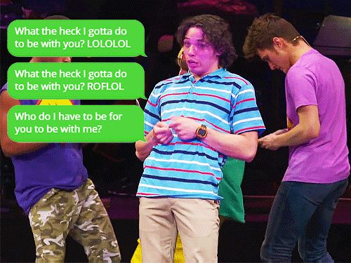
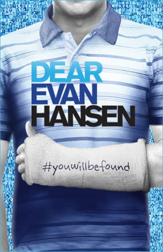

Musicals!
I know...
It isn´t even remotely normal for people who likes rock, like myself, to like clique, boring musicals; BUT YOU ARE WRONG, SO WRONG ACTUALLY! I'm gonna actually called it an addiction, they have everything you can ask, a story tell directly with music, and not just boring romantic musicals,THERE'S A WHOLE GENRE OF THEM. I started listening to them thanks to an american musical called Hamilton, and then afterward I just fell more and more in love with them.
Of course I suppose what you know as musicals are just disney movies, I can't tell No, to that, but they can be so much more, and they are just so old, and full of history. Musicals are theathers show that include music for telling a story, it´s just theater but more exploted and with so juice in it, we can tell No, when we just find ourselves singing to something so cachy.
|  |
Musical theatre is a form of theatrical performance that combines songs, spoken dialogue, acting, and dance. The story and emotional content of a musical – humor, pathos, love, anger – are communicated through the words, music, movement and technical aspects of the entertainment as an integrated whole. Although musical theatre overlaps with other theatrical forms like opera and dance, it may be distinguished by the equal importance given to the music as compared with the dialogue, movement and other elements. Since the early 20th century, musical theatre stage works have generally been called, simply, musicals.
Check out which shows are on, right know, I personally recommend AMELIE
So why do I like musicals, well I could do a whole rambling about why I personally adore everything, but no we need to tell this fast.
LOVE IT TILL THE END OF TIMES
They tell you a story, A STORY! It's not like other types of music where the lyrics are just, so so horrible, they just use a lot of languague, they stimulate creativity, and also don't forget that very succesful movies have been adapted from a Broadway musical, such as an Oscar winner: LALALAND
We can also see that a lot of people like, musicals, but just movie musicals, like Rocky Horror Show, Little Shop of Horrors or even Les Miserables. But for these people, I recommend listening to Broadway musicals, and no I'm not talking about Wicked, we just need to see and explore more about this wonderful topic.
I recommend to check out this musicals if you want to be more imbested
|  | |

|